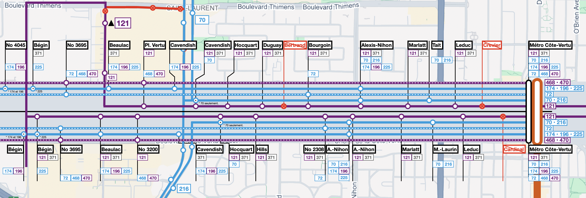

Ici, je suggère de regrouper les lignes sur Côte-Vertu pour desservir les mêmes arrêts selon leur destination.
En général, les lignes à l'ouest de la station Côte-Vertu peut être séparés en 4 catégories suivantes, après la refonte :
Par contre, chaque ligne effectue des arrêts différents des autres lignes. Par exemple, la ligne 216 s'arrête à Tait, mais la ligne 225 s'arrête à Leduc. Ceci étant dit, presque toutes les lignes effectuent un arrêt à Alexis-Nihon. Le tableau suivant récapitule le service actuel ainsi que des changements proposés :
| Arrêt | Lignes actuelles | Lignes proposées | Arrêt | Lignes actuelles | Lignes proposées | |||
|---|---|---|---|---|---|---|---|---|
| Direction Ouest | Direction Est | |||||||
| –– | Métro Côte-Vertu | 70-72-121-174-196-216-225-371-468-470 | 70-72-121-174-196-216-225-371-468-470 | 55446 | Bégin | 174-196 | 174-196 | |
| 55803 | Crevier | 121-371 | Arrêt à supprimer | 55955 | Bégin | 225 | 121-225-371 | |
| 55594 | Leduc | 121-225-371 | 121-371 | 55778 | No 3695 | 174-196-225-371 | 72-468-470 | |
| 55597 | Tait | 121-216-371 | 70-216 | 55466 | Beaulac | 174-196-225-371 | 121-174-196-225-371 | |
| 55580 | Marlatt | 121-371 | 121-371 | 55463 | No 3200 (Place Vertu) | 196-225 | 121-468-470 | |
| 55554 | Alexis-Nihon | 70-121-196-216-225-371 | 70-121-174-196-216-225-371 | 55487 | Cavendish | 174-196-225-371 [216 sur Cavendish] |
174-196-225-371 [216 sur Cavendish] |
|
| 55802 | Bourgoin | 72-121-371 | 72-121-371 | 55503 | Hocquart | 70-121-371 | 70-121-371 | |
| 55518 | Bertrand | 121-371 | Arrêt à supprimer | 55516 | Hills | 121-371 | 121-371 | |
| 55517 | Duguay | 121-371 | 121-371 | 55898 | No 2308 (LaurenHill) | 72-121-371 | 72-121-371 | |
| 55502 | Hocquart | 121-371 | 121-371 | 61769 | Alexis-Nihon | Arrêt vacant | 70-174-196-216-225 | |
| 55486 | Cavendish | 70-121-174-225-371 | 70-121-371 | 55556 | Alexis-Nihon | 70-121-196-216-225-371 | 121-371 | |
| 55488 | Cavendish | 174-196-225 [216 sur Cavendish] |
174-196-225 [216 sur Cavendish] |
55581 | Marlatt | 121-371 | 121-371 | |
| 55801 | No 3131 (Place Vertu) | 121-196 | 121-468-470 | 55596 | Marcel-Laurin | 121-216-225-371 | 70-216 | |
| 55464 | Beaulac | 174-196-225-371 [121 sur Beaulac] |
174-196-225-371 [121 sur Beaulac] |
55604 | Leduc | 121-371 | 121-371 | |
| 55355 | No 3695 | 174-196-225-371 | 72-468-470 | 55624 | Cardinal | 121-371 | Arrêt à supprimer | |
| 55445 | Bégin | 196-225-371 | 225-371 | –– | Métro Côte-Vertu | 70-72-121-174-196-216-225-371-468-470 | 70-72-121-174-196-216-225-371-468-470 | |
| 55785 | No 4045 | 174-196 | 174-196 | |||||
Ces propositions visent une séparation des arrêts locaux et express. Par ce fait, un arrêt desservira presque seulement les lignes locales ou express, à l'exception de l'arrêt Alexis-Nihon qui dessert presque tous les parcours. Également, les arrêts Cardinal (dir. Est), Crevier (dir. Ouest) et Bertrand (dir. Ouest) sont appelés à être retirés en raison de leur grande proximité aux autres arrêts. D'autres arrêts locaux retirés serviront aux circuits express (par exemple Tait et Marcel-Laurin). Le plan suivant illustre la proposition ci-dessus :
